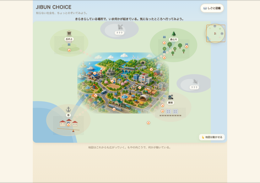
desktop-01-initial.png
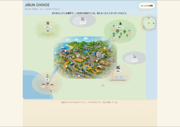
desktop-02-after-pan.png
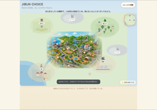
desktop-03-undiscovered-fog.png
desktop-04-district-selected.png
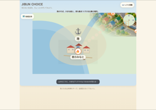
desktop-05-event-markers.png
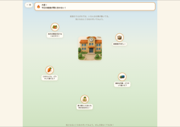
desktop-06-entered-world-area.png
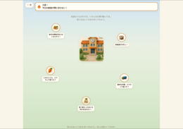
desktop-07-return-to-map-visited-state.png
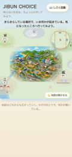
mobile-01-initial.png
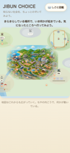
mobile-02-after-pan.png
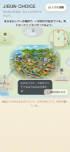
mobile-03-undiscovered-fog.png
mobile-04-district-selected.png
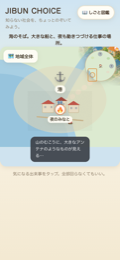
mobile-05-event-markers.png
mobile-06-entered-world-area.png
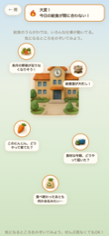
mobile-07-return-to-map-visited-state.png
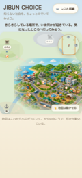
mobile-qa-02-initial.png
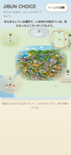
mobile-qa-03-after-pan.png
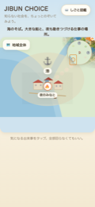
mobile-qa-04-district-selected.png
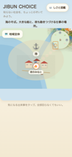
mobile-qa-05-event-appeared.png
mobile-qa-06-return-to-home.png
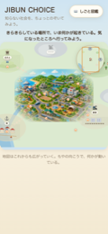
mobile-qa-07-visited-state.png
mobile-qa-08-discover-another-area.png
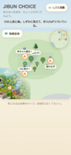
mobile-qa-09-undiscovered-state.png